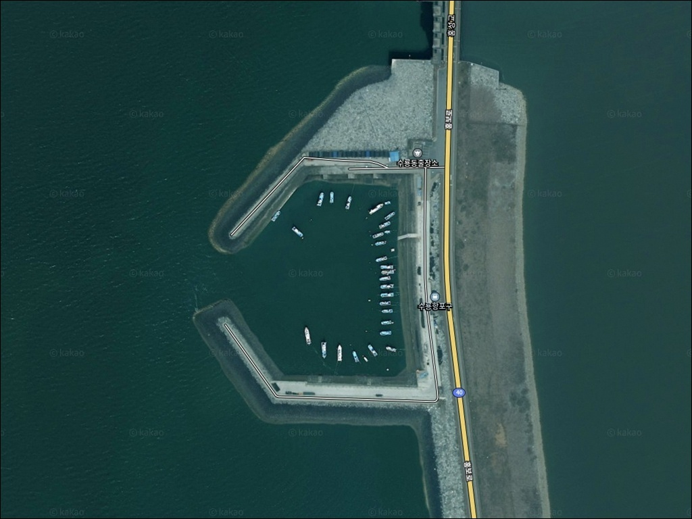
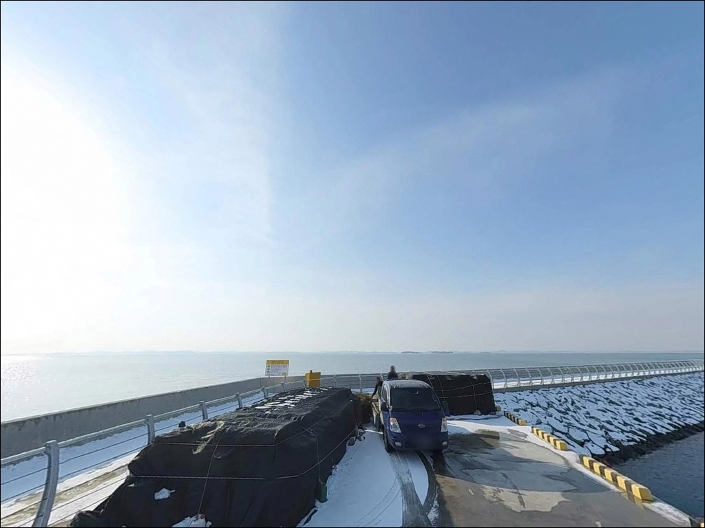
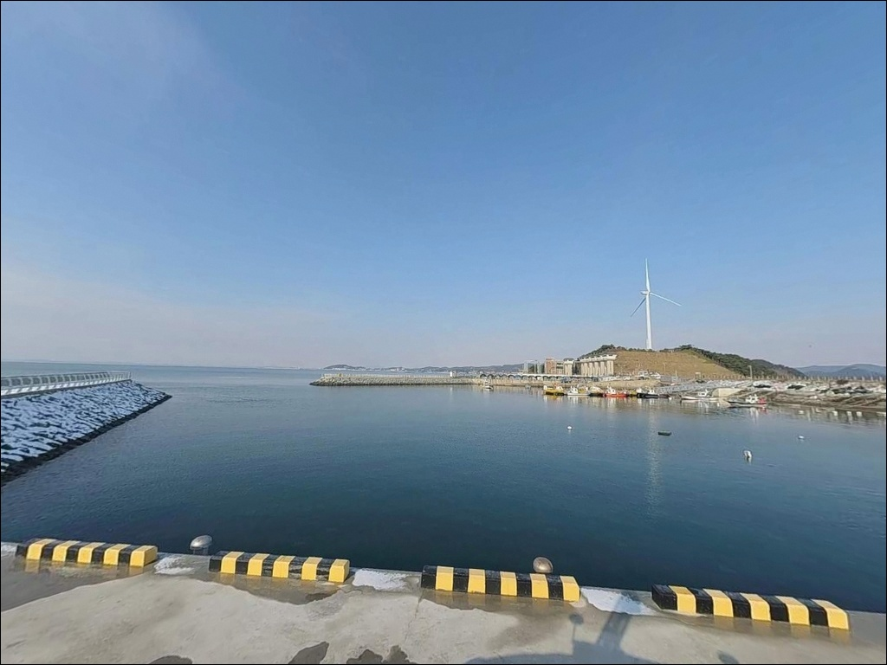
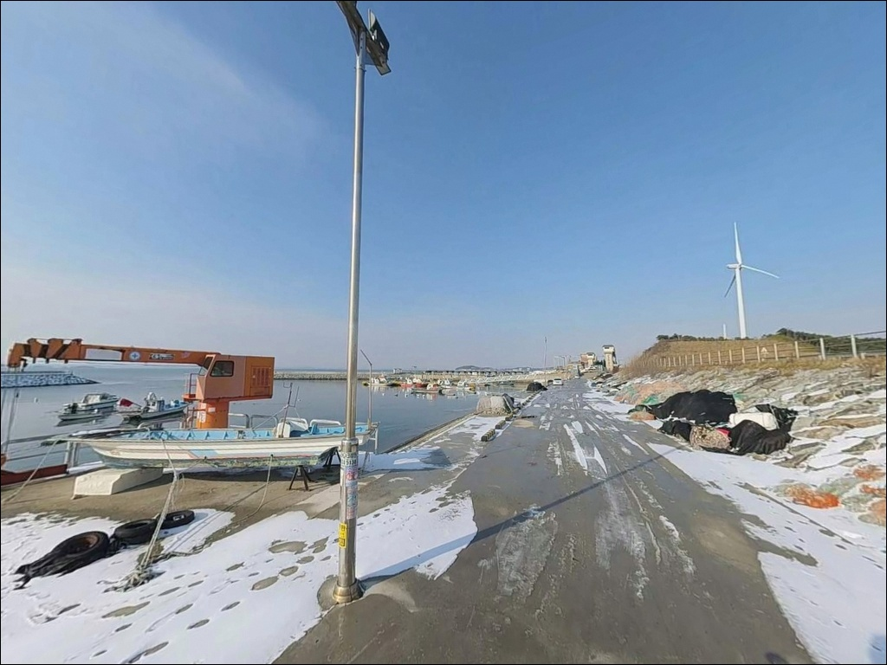
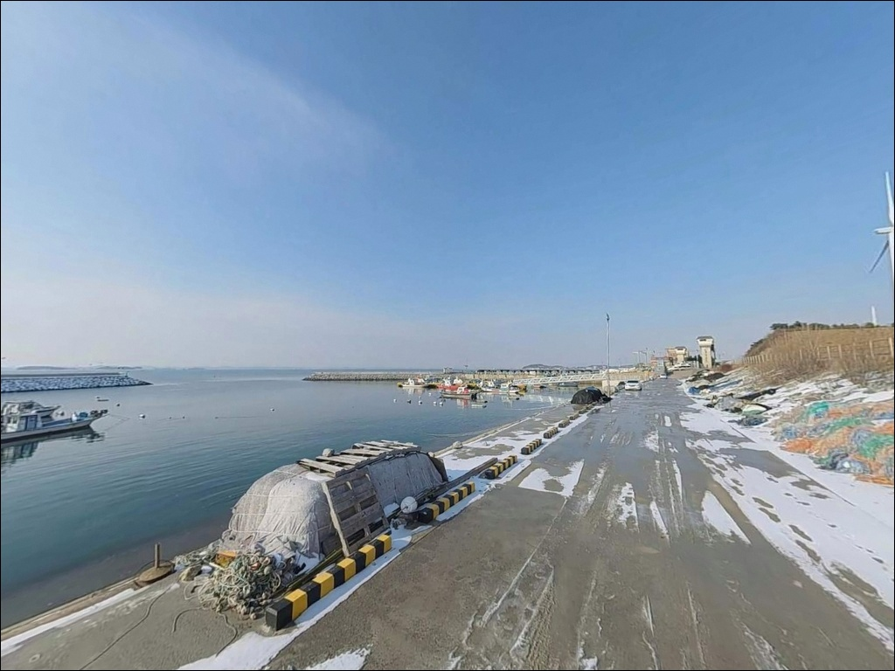
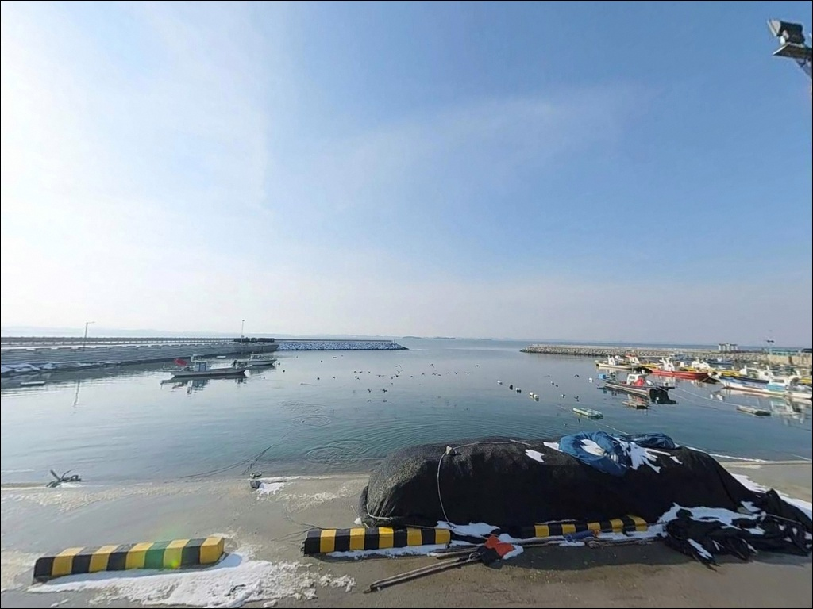
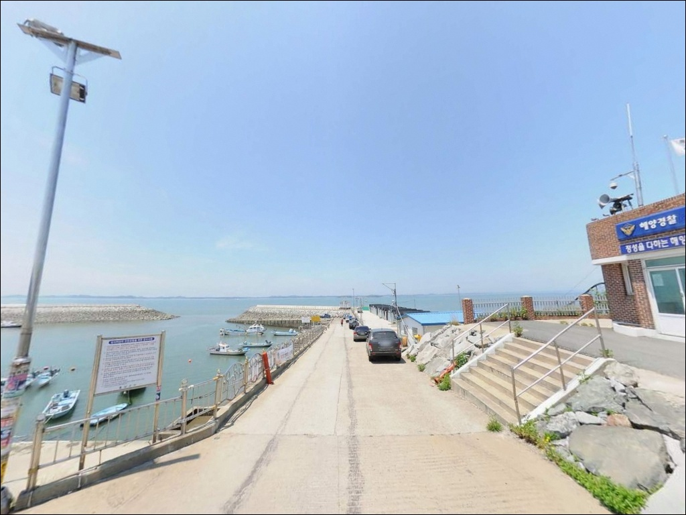
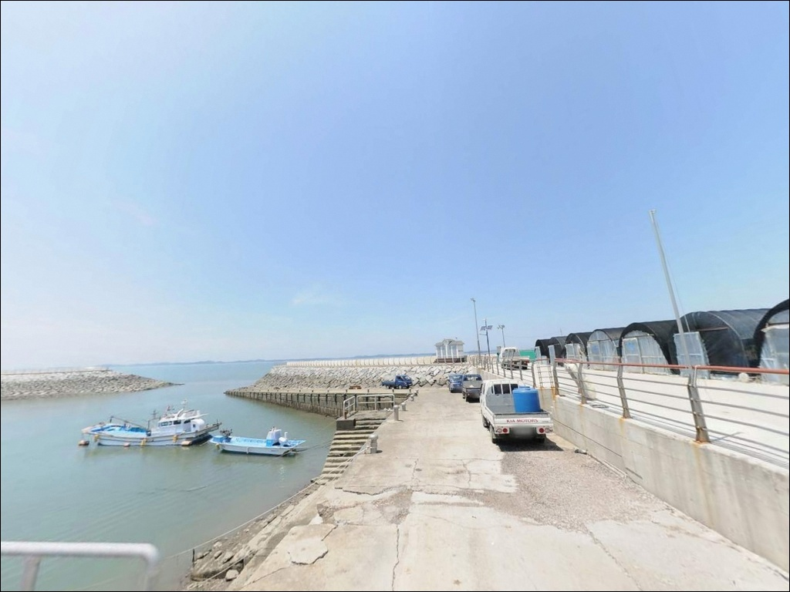
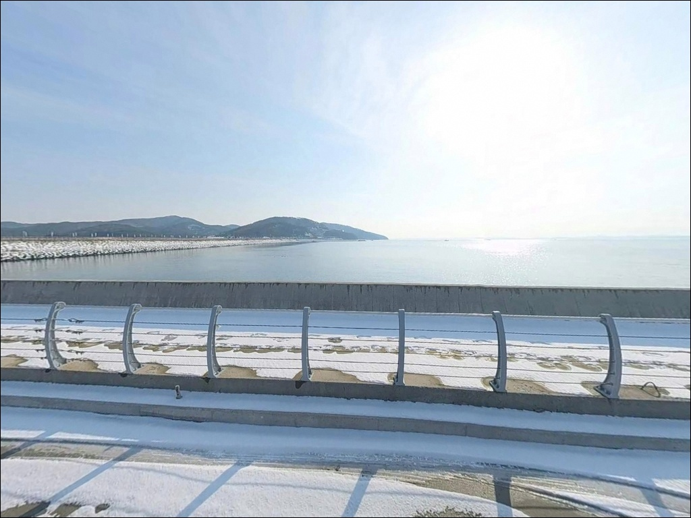

수룡항포구 충남 홍성군 감성 바다 차박, 낚시 포인트
이 페이지에는 광고(제휴 링크 포함)가 있으며, 광고 링크를 통해 구매하면 운영자가 판매 수익 또는 수수료를 받을 수 있습니다. 포인트 사진: 카카오맵 스카이뷰·로드뷰. 이 페이지의 지도·사진 이미지는 카카오맵의 실제 서비스 이미지와 다를 수 있습니다.


포인트 안내
수룡항포구
충남 홍성군 서부면 신리 659
물때 확인 없이 수룡항포구를 찾으면
간조 타이밍에 외항 방파제 끝단도
수심이 얕아져 채비가 바닥을 치는 상황이 생깁니다.
천수만 내측 배수갑문 인근 특성상
간조와 만조의 수위 차이가 크고,
조류 흐름도 시간대에 따라 급변하는 구조입니다.
수룡항포구는 충남 홍성군 서부면 신리에 자리한
소형 방파제 포구입니다.
홍성방조제 배수갑문 건너편에 위치하며,
천수만 조류가 닿는 입지 덕분에
갑오징어 에깅과 삼치 루어 포인트로
낚시인들 사이에 알려진 곳입니다.
이 글은 수룡항포구의 진입 환경,
지형 기반 낚시 여건, 차박 조건에 집중합니다.
조황 단정이나 시설 운영 여부는
이 글의 범위에 포함되지 않습니다.

1. 포인트 위치와 진입 동선
수룡항포구는 40번 국도(천수만로)에서
서부면 신리 방향으로 빠져나와
방조제 도로를 따라 접근하는 동선입니다.
방조제 도로 상태는 양호한 편이라
차량 진입 자체의 난이도는 낮습니다.
포구 진입부는 소형 마을 포구 수준이라
도로 폭이 넉넉하지 않을 수 있습니다.
대형 SUV나 캠핑카처럼 차체가 긴 차량이라면
출발 전 위성지도로 진입로와
회차 가능 여부를 미리 확인하는 편이 안전합니다.
주차는 포구 진입부 공터와
방파제 시작 구간 인근을 활용하는 방식이 일반적입니다.
낚시 차량이 주로 이용하는 공터가
포구 안쪽에 확인되며,
어선 이동 동선을 막지 않는 자리를
먼저 확인하는 것이 기본 매너입니다.

2. 차박 환경과 야간 체류 여건
서부면 신리 일대는 민가 밀집도가 낮은 편이라
야간 차량 통행이 많지 않습니다.
조용한 환경에서 낚시 후 하룻밤 머무는 용도로는
나쁘지 않은 조건이지만,
가로등이 적어 야간에는 상당히 어두운 편입니다.
개인 헤드랜턴과 조명 장비는 필수로 챙겨야 합니다.
포구 공터는 차박 공간으로 활용되는 사례가 있으나
주차 가능 대수가 넉넉하지 않을 수 있습니다.
외항 쪽에서는 바람 영향을 받는 개방형 구조라
바람이 강한 날에는 체류 자체가 불편해질 수 있습니다.
기상 예보에서 풍속이 높게 예측된 날은
남당항 방면으로 이동하는 편이 현실적입니다.


3. 주변 편의시설 및 인프라 현황
수룡항포구 반경 3km 이내에는
확정된 편의점이나 식당을 기대하기 어렵습니다.
소형 어촌 포구 특성상
완전 자급 체제로 진입하는 것이
기본 준비 방식입니다.
식수, 얼음, 낚시 소품, 연료, 비상약품 모두
출발 전에 갖추고 이동해야 합니다.
반경 10km권에서 가장 가까운 상업시설 집결지는
남당항 일대입니다.
대하축제로 알려진 큰 항으로,
식당과 마트를 포함한 기본 생활 인프라를
이용하기 좋습니다.
방조제 건너편에는 천북굴단지(보령시 천북면)가
가시거리에 위치해 있어,
굴구이 식사를 겸한 출조 동선으로
묶어 활용하는 방법도 있습니다.

4. 출조 전 반드시 챙겨야 할 준비사항
수룡항포구 방문 전에 가장 먼저 확인할 것은
물때입니다.
천수만 내측이라 하더라도 배수갑문 인근 특성상
조류 변화가 있고,
간조 전후에는 내항과 외항 모두
수심이 급격히 낮아지는 구간이 생깁니다.
바다타임에서 서부면 기준 물때를 확인하고
만조 전후 2시간을 중심으로
출발 시각을 잡는 것이 기본 전략입니다.
배수갑문 인근 포인트에서는 출발 전 물때 확인이
방문 성패를 가르는 기본 조건입니다.
갑오징어 에깅을 주목적으로 찾는다면
채비 손실을 감안해 에기 여분을 넉넉하게 준비합니다.
방파제 발판 중 미끄러운 구간이 있을 수 있어
미끄럼 방지 신발도 필수입니다.
야간 입장 시에는 구명조끼와 헤드랜턴을 반드시 착용하고,
어선 작업 동선을 방해하지 않는 자리에서
낚시를 시작하는 것이 기본 매너입니다.

5. 지형이 만드는 낚시 여건 분석
수룡항포구는 외방파제와 내항 선착장으로 구성된
전형적인 소형 방파제 포구 구조입니다.
외방파제는 바다 쪽으로 뻗어 있고,
내항은 어선이 정박하는 완만한 구조입니다.
방파제 끝단 쪽에서 수심이 확보되며,
만조 전후에 외항 방향 조류 흐름이 살아나는
구조입니다.
외항 방파제 끝단은 만조 전후 수심이 확보될 때
갑오징어 에깅 조과가 올라오는 자리입니다.
내항 쪽은 잔잔한 수면 조건으로
찌낚시 접근이 가능한 구간입니다.
방파제 발판 인근 테트라포트 틈새는
루어 지그헤드 탐색 구간으로 활용할 수 있습니다.
조류가 느려지는 정조 전후에 채비를
바닥 쪽으로 보내 머물게 하는 방식이
이 포인트 구조와 잘 맞습니다.
기대해 볼 수 있는 어종은
서해 천수만 소형 방파제 포구 패턴을 따릅니다.
숭어, 망둥어, 붕장어, 우럭, 노래미 계열이
이 일대 포구에서 일반적으로 언급되는 어종이며,
가을 시즌에는 갑오징어와 삼치가 더해집니다.
최신 조황은 출조 전에 꼭 검색해 보시기 바랍니다.


6. 포인트에 어울리는 낚시 스타일
이 포인트에서 가장 기대를 걸어볼 만한 낚시는
갑오징어 에깅입니다.
9월 말에서 10월 중순 사이에
갑오징어 에깅 조과가 좋았다는 언급이 있고,
외항 방파제 끝단 수심 구간을 노리는 방식이
이 포인트 지형에 잘 맞습니다.
삼치 루어낚시도 시도해볼 만한 스타일입니다.
워킹 중심으로 방파제 외항 방향에
메탈 지그를 던지는 방식이 어울리며,
조류 흐름이 살아 있는 만조 전후 타이밍에
중층 이상을 탐색하는 리트리브가
삼치 반응을 유도하는 방식입니다.
원투낚시도 이 포인트 구조에 맞는 스타일입니다.
외항 방향으로 채비를 멀리 보낸 뒤
바닥층에서 붕장어, 숭어, 망둥어를 기다리는 방식이며,
조류가 느려지는 정조 타이밍에
채비를 고정해 두고 기다리는 패턴이
원투 포인트 공략 방법입니다.
내항 안쪽의 잔잔한 구간은 찌낚시 자리로 활용할 수 있습니다.
학꽁치나 감성돔이 이 일대 항구 포인트에서
언급되는 어종이며,
발판이 안정적인 구간을 먼저 확인하고
자리를 잡는 것이 우선입니다.

7. 대안 포인트와 플랜 B 동선
수룡항포구 여건이 기대에 못 미칠 때
가장 먼저 이동할 대안은
모산도공원 일대 연안입니다.
다리로 연결된 공원이라 접근이 쉽고,
연안 전체가 갑오징어 포인트로 알려진 구역입니다.
수룡항포구와 같은 생활권으로 묶어
하루 동선을 구성하기 좋습니다.
홍성군 서부면 해안선을 따라
궁리항과 어사항이 있습니다.
궁리항은 홍성 대표 낚시 포인트로
방파제 에깅과 워킹 루어 출조 후기가 많은 편입니다.
수룡항포구보다 규모가 크고
발판과 포인트 선택지가 넓은 구조라
여건이 여의치 않을 때 이동하기 좋습니다.
남당항은 반경 10km권에서
가장 크고 인프라가 잘 갖춰진 대안입니다.
방파제 외항·내항 모두 포인트로 활용 가능하고,
가을 갑오징어 시즌에는 낚시인이 집중되는 곳입니다.
편의시설까지 함께 해결하려면
남당항을 기점으로 잡는 동선이 효율적입니다.

물때와 바람을 읽으면
수룡항포구가 달라 보입니다
갑오징어 에깅이나 삼치 루어를
즐기는 낚시인이라면
수룡항포구의 외항 방파제 구조는
잘 맞는 조건입니다.
가을 시즌 만조 전후를 잘 맞추면
생활형 포인트이지만
충분한 재미를 기대해볼 수 있는 곳입니다.
반면 물때 계산 없이 간조에 찾아가거나,
바람 예보를 확인하지 않고
강풍일에 외항 끝단에 자리를 잡으면
낚시 자체가 불편해지는 상황이 됩니다.
물때 확인, 바람 예보, 완전 자급 준비
이 세 가지를 갖추고 간다면
조용하고 한적한 서해 방파제 포인트로서
만족스러운 출조가 될 수 있습니다.
편의시설 없는 조용한 서부면 포구에서
물때에 맞춘 에깅 한 판을 즐기고
하룻밤 차박으로 마무리하는 출조라면,
남당항 인프라를 사전에 확인해 두는 것이
이 동선을 완성하는 마지막 준비입니다.